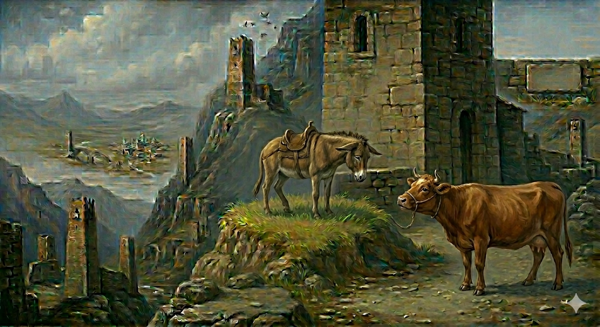

И.А. Дахкильгов. Хьехаме дувцарш - поучительные рассказы-притчи.
И.А. Дахкильгов. Хьехаме дувцарш - поучительные рассказы-притчи. Из ингушского фольклора.

Дега вас хинна латт со
Корта Ӏо а элла, матара даха, юрта йисте латташ вир хиннад. Ӏулагара цӀабоагӀача Ӏатто хаьттад: - Ма чӀоагӀа гӀайгӀане да хьо. Фу бала кхаьчаб хьога? - Даьсара, тахан са дас цхьан Ӏовдалча сагах “вир да хьо” оалаш хеза, дега чӀоагӀа вас хинна латт со, - жоп деннад виро.
РУССКИЙ
Очень меня огорчило
На окраине села понуро, одолеваемый большой печалью, стоял осел. Возвращавшаяся с пастбища корова спросила: - Чего это ты такой печальный? Что тебя гложет? - Да вот, услышал я как мой хозяин сегодня какого-то дурака обозвал “ослом”. Очень уж это меня огорчило.
ENGLISH
It really upset me
On the outskirts of the village, a dejected-looking donkey stood, overcome by deep sorrow. A cow returning from the pasture asked: - Why are you so sad? What’s bothering you? - Well, I heard my master call some fool a 'donkey' today. It really upset me.
НОХЧИЙН
Деган вас хилла лаьтта со
Корта охьа а оьллина, матар йоьлла, йуьртан йистехь лаьтташ вир хилла. Бежера цӀабогӀучу атто хаьттина: - Ма чӀогӀа гӀайгӀане йу хьо. ХӀун бала кхаьчна хьоьга? - Десара, тахан сан дас цхьана Ӏовдал стагах “вир йу хьо” олуш хезна, дагна чӀогӀа вас хилла лаьтта со, - жоп делла виро.
ПОГОВОРКИ
Дуне дуаш вац, ялат дуаш веце. - Тот не живет настояшей жизнью, кто хлеб не ест (не растит). Хина йисте вахе а хина хьурмат де (кхом бе). - Даже живя у реки, воду береги (цени). ХьаошалгӀа вахача модзаца мара чай молаш вац, ший цӀагӀа маькха зирталг бац. - В гостях пьет только чай с медом, хотя дома нет и хлебной крошки.